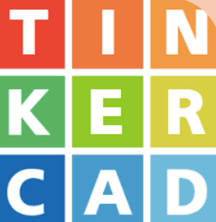

Semana 1 - 23/03/22
Prototipo 3D
Al inicio de la clase, la profesora creo una sala en Thinkercard para que la clase pueda realizar su prototipo.
Tinkercad
Este software lo conocimos en Laboratorio 1 pero a modo de resumen, recordamos que nos permite diseñar cualquier objeto con volumen de forma intuitiva y después llevarlo a la realidad mediante una impresora 3D.
Thingiverse
De igual manera, este programa lo vimos en Laboratorio de innovación y en clase, recordamos que es una web gratuita dedicada a la creación y publicación de archivos STL digitales, diseñados y publicados por los usuarios.
Dentro de este programa podemos comprar ciertos diseños que vamos a necesitar para el proyecto
Ultimaker
Es una empresa donde fabrican impresoras 3D de fabricación de filamentos fundidos.
Desarrolla software de impresión 3D y venden materiales de impresión 3D de marca.
1. Para hacer los cortes, los archivos tienen que ser guardados en GCode para que la impresora 3D lo reconozca
2. Para imprimir, debemos elegir la marca de la impresora que se va a utilizar, luego hacemos las pruebas de la impresora para saber que trabaja bien y laminar de forma automática.
3. Al momento de laminar siempre va a salir un borde para indicar que todo está bien.
4.Luego podremos saber cuanto tiempo se va a demorar la impresión.